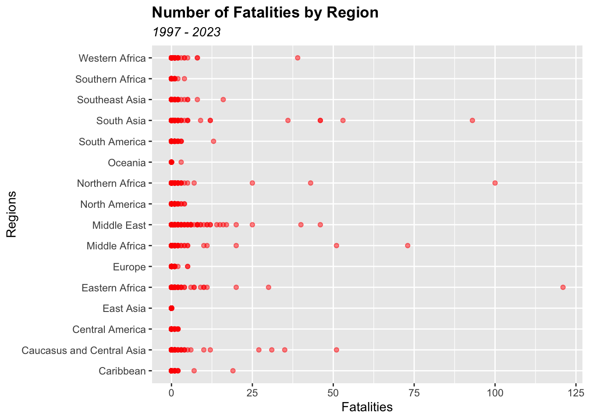
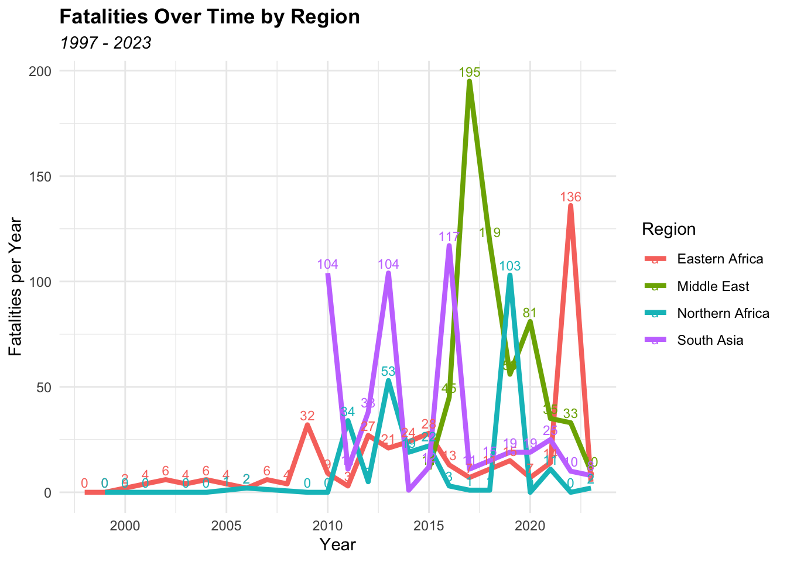

library(tidyverse)
library(readxl)
data <- read_excel("/Users/KyleK/Desktop/DS/assignment04root/assignment04/Data/Assignment04dataset.xlsx")
view(data)
#data set doesn't have a URL so the xlsx file must be downloaded from GitHub repo.index
Assignment 04: Data Visualization, Quarto, and Git
Visualization #1: Count of Events by Event Type
library(ggplot2)
# Calculate counts for each disorder type.
data_counts <- data %>%
group_by(DISORDER_TYPE) %>%
summarise(count = n())
data_counts %>%
ggplot(aes(y = DISORDER_TYPE, x = count)) +
geom_bar(stat = "identity", width = 0.8, fill = "blue") +
#stat = "identity" asks R to use the y-value provided for the dependent variable.
geom_text(aes(label = count), vjust = -0.1, hjust = -0.5, size = 3, color = "black") +
theme(
plot.title = element_text(face = "bold"),
plot.subtitle = element_text(face = "italic")
) +
labs(title = "Number of Disorders by Type", subtitle = "1997 - 2023", y = "Count", x = "Disorder Type") +
xlim(0, 15000) #modified x-axis limits to fit count labels onto plot. Interpretation:
Each of these instances involves journalists and media workers: journalists, media editors, camera operators and photographers, news reporters/broadcasters, etc. The graph shows the number of disorders recorded in the dataset by disorder type. Demonstrations are the most common event, with over 10000 instances recorded, followed by political violence, with over 4500 instances recorded. Political violence; Demonstrations are the least common event, with under 200 instances recorded, followed by strategic developments with under 800 instances recorded.
Visualization #2: Fatalities by Disorder Type
# Calculate the sum of FATALITIES for each EVENT_TYPE and DISORDER_TYPE
event_counts <- data |>
group_by(DISORDER_TYPE, EVENT_TYPE) |>
summarise(event_fat = sum(FATALITIES))
event_counts |>
ggplot(aes(x = DISORDER_TYPE, y = event_fat, fill = EVENT_TYPE)) +
geom_col() +
theme(axis.text.x = element_text(angle = 45, hjust = 1)) + #angled text to fix overcrowding
geom_text(aes(label = event_fat), position = position_stack(vjust = 0.5), size = 3, color = "black") +
#labels showing the sum of FATALITIES for each EVENT_TYPE
labs(title = "Number of Fatalities by Disorder Type", subtitle = "1997 - 2023", x = "Disorder Type", y = "Fatalities", fill = "Event Type") +
theme(plot.title = element_text(face = "bold"), plot.subtitle = element_text(face = "italic"))Interpretation:
This graphs shows which events that involved journalists and media workers were the deadliest. It shows the number of fatalities by disorder type and specifies the fatalities within each event type, which is a category of disorder. Political violence is the disorder type with the highest number of recorded fatalities. This column includes the two of the deadliest event types, explosions/remote violence and violence against civilians, with 1154 fatalities and 1010 fatalities, respectively. The demonstrations and political violence; demonstrations variables have the second and third most number of fatalities, respectively, recording under 300 deaths. The strategic developments variable recorded zero fatalities overall.
Visualization #3: Fatalities by Region
data%>%
ggplot() +
geom_point(mapping = aes(x=FATALITIES, y = REGION), color = "red", alpha = 0.5) +
labs(title = "Number of Fatalities by Region", subtitle = "1997 - 2023", x = "Fatalities", y = "Regions") +
theme(plot.title = element_text(face = "bold"), plot.subtitle = element_text(face = "italic"))
Interpretation:
This graph presents the deadliest regions that involved journalists and media workers. It illustrates the number of fatalities for each individual observation across different regions. The majority of observations are lower-fatality incidents, recording 10 or fewer deaths. The middle east displays a high density of incidents with less than 25 fatalities, whereas Eastern and Northern Africa are the only regions where an incident with 100 or more fatalities took place.
Visualization #4: Fatalities by Region Over a Period of Time
data_sum <- data %>%
group_by(YEAR, REGION) %>%
summarize(Total_Fatalities = sum(FATALITIES))
regions_to_include <- c("Eastern Africa", "Northern Africa", "Middle East", "South Asia")
data_filtered <- data_sum %>%
filter(REGION %in% regions_to_include)
data_filtered |>
ggplot(aes(x = YEAR, y = Total_Fatalities, color = REGION)) +
geom_line(size = 1.5, linetype = "solid") +
geom_text(aes(label = Total_Fatalities), vjust = -0.5, hjust = 0.5, size = 3) +
theme_minimal() +
labs(x = "Year", y = "Fatalities per Year", title = "Fatalities Over Time by Region", subtitle = "1997 - 2023", color = "Region") +
theme(plot.title = element_text(face = "bold"), plot.subtitle = element_text(face = "italic"))
Interpretation:
The graph displays the total fatalities per year in Eastern Africa, Middle East, Northern Africa, and South Asia that resulted from disorders involving journalists and media workers. All four regions had their deadliest years after 2015, although records for the Middle East prior to 2015 are absent from the data set. Northern Africa has the smallest peak out of all four regions, reaching 100 fatalities in 2019, whereas eastern Africa had relatively low fatalities up to 2020, and proceeded to peak at over 125 fatalities in 2022.